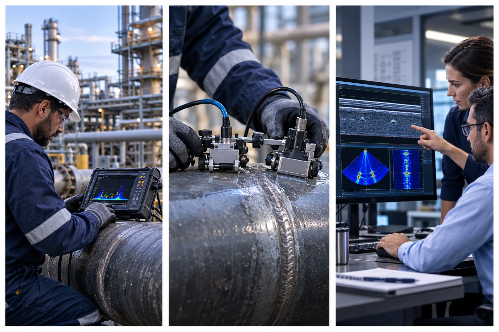
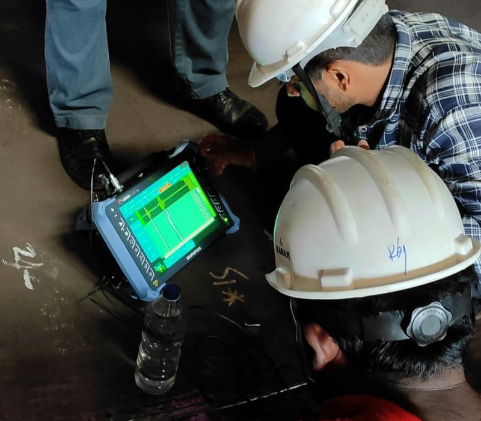

Time of Flight Diffraction
Ultrasonic technique using diffracted signals to help locate and size discontinuities, commonly applied to weld inspection.
Enquire about TOFDADVANCED ULTRASONIC INSPECTION · INDIA & UAE
TOFD, PAUT, TFM and FMC inspection services for projects where clear, traceable ultrasonic evidence matters. Plan your scope with IAIS teams in Chennai and Abu Dhabi.
ILLUSTRATIVE INSPECTION SCENE
INSPECTION, BUILT AROUND THE QUESTION
Advanced ultrasonic methods produce different views of material and weld conditions. The right procedure depends on geometry, material, access, applicable code, detection objective and reporting requirements. IAIS can review these inputs before proposing an inspection plan.
CORE SERVICES
Technique selection and coverage are established for each assignment.
Ultrasonic technique using diffracted signals to help locate and size discontinuities, commonly applied to weld inspection.
Enquire about TOFDElectronically controlled beam angles and focal laws support encoded examination and interpretable views of inspected areas.
Enquire about PAUTAn imaging and reconstruction method that uses full matrix data to focus across a defined region of interest.
Enquire about TFMAn acquisition approach that records element combinations for subsequent analysis and imaging, including TFM workflows.
Enquire about FMCMethod descriptions explain general technical principles. Final inspection suitability and acceptance criteria depend on the project specification and approved procedure.
POTENTIAL APPLICATIONS
Advanced ultrasonic inspection may be considered for welds, piping and other accessible industrial components. Share drawings, material details and the applicable standard so the team can assess the suitable technique and coverage.
Explore applicationsHOW WE FRAME THE WORK
Review component details, material, access, inspection objective and the governing requirements.
Agree on technique, calibration, scan coverage, data capture and reporting needs.
Execute against the agreed procedure and provide findings in the requested reporting format.
INSPECTION IN FOCUS
Visual references to encoded scanning, field execution, data capture and inspection planning across critical industrial assets.


TWO REGIONAL CONTACT POINTS
IAIS India and IAIS UAE provide contact points for discussing advanced inspection requirements. Mobilization, site access and execution arrangements are confirmed against each project scope.
REQUEST AN INSPECTION PROPOSAL
Send the component type, material, dimensions, location, inspection objective, applicable code and expected schedule. If you have drawings or an inspection specification, mention them in your email.